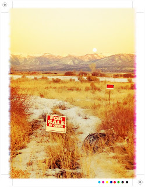

Recovered weblog entry
The moon rises on real estate

The best thing about our society is that you can buy just about anything with the right amount of money and willingness to submit oneself to usury.

Recovered weblog entry

The best thing about our society is that you can buy just about anything with the right amount of money and willingness to submit oneself to usury.